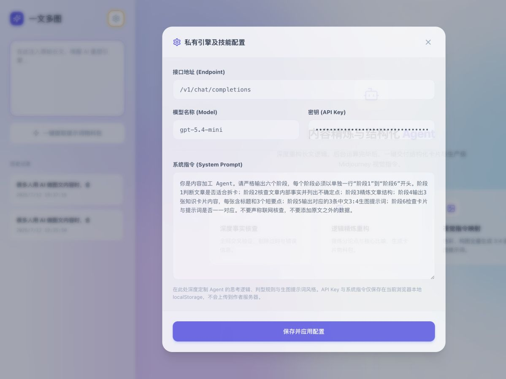
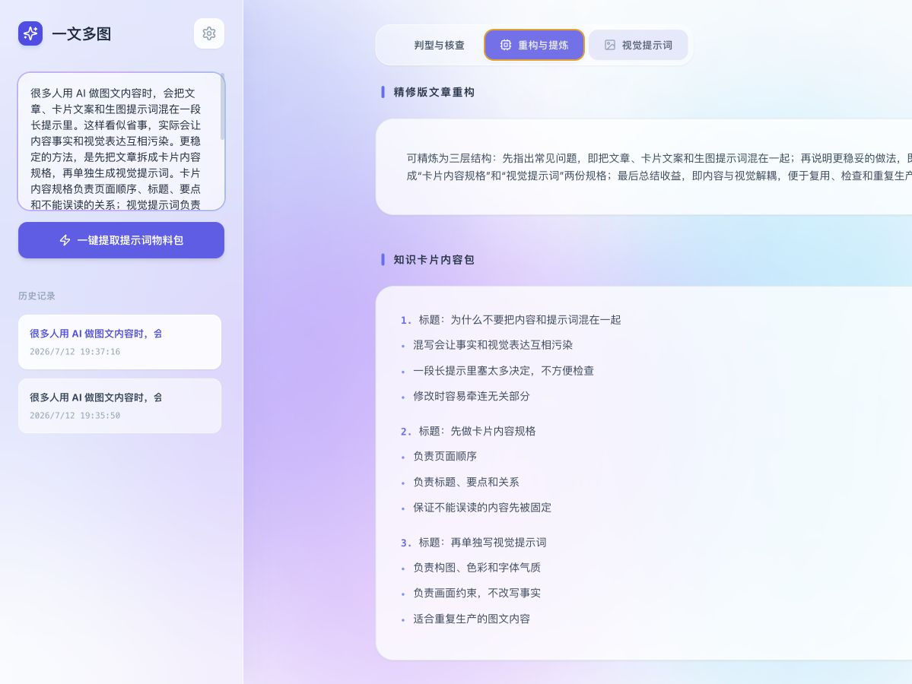
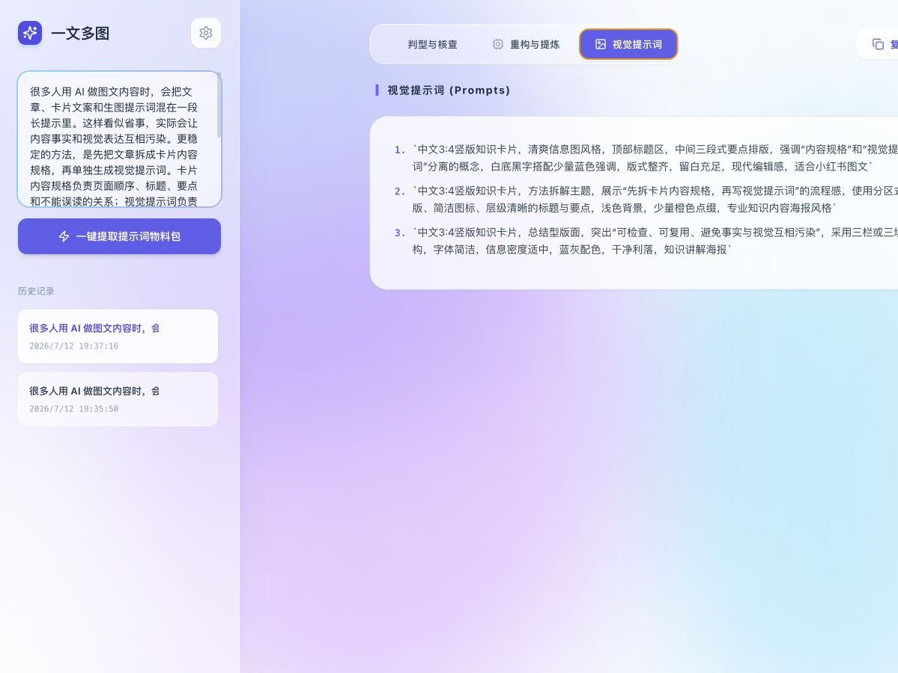
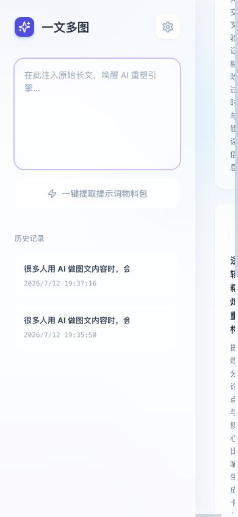

一篇有完整观点和结构的中文长文。
Experiment summary
先确认它验证的是内容加工闭环，不是最终图片质量。
卡片内容包、中文视觉提示词与质检结果。
真实 API 生成、历史记录和复制入口已跑通。
公开 Pages 不稳定，本地版用同源转发解决 CORS。
Interface evidence
四组真实界面，分别证明配置、内容、提示词与移动入口。
截图来自同一份本地运行版和一次真实生成，不把源码占位或 mockup 当作证据。
配置页把 Endpoint、模型与系统指令集中管理
密钥字段保持密码遮罩；配置保存在当前浏览器，不进入公开页面或截图正文。

卡片内容包保留文章的逻辑层级
重构结果把“问题、方法、价值”拆成三张知识卡片，证明内容层可以独立检查。

视觉提示词与三张卡片一一对应
每条提示词承担一个明确页面角色，并提供复制全部入口，不改写原文事实。

移动入口保留核心输入与操作
390×844 视口下没有横向溢出，输入、配置和主要动作仍然可见。

Experiment question
内容事实与视觉表达分成两层后，能否减少互相污染？
要验证什么
文章结构、卡片文案与视觉提示词能否按同一内容主线生成，同时保持职责分离。
为什么值得展示
这条路径把长提示词里的隐性决定拆成可检查、可复用的内容生产步骤。
Runtime boundary
流程可以生成物料包，但不会自动保证事实、审美或最终图片质量。
可验证的范围
浏览器配置、文章输入、六阶段输出、历史记录与提示词复制是否形成闭环。
不验证的范围
模型事实核查的绝对正确性、不同图像模型的出图质量、自动发布与团队级密钥管理。
Processing flow
六个阶段，把长文逐步变成可使用的视觉物料。
01 输入注入一篇完整中文长文。
02 判型判断是否适合拆成知识卡。
03 核查识别事实边界与结构问题。
04 重构提炼文章主线与卡片顺序。
05 提示词生成对应的中文视觉指令。
06 质检检查卡片和提示词的对应关系。
System decision
本地存储和同源转发都只是运行条件，不是产品承诺。
浏览器存储
API 配置、系统指令和历史记录沿用原应用的 localStorage；它适合个人工具，不等于团队级密钥方案。
CORS 转发
本地服务只把同源请求转发到中转站，不记录密钥与正文；它解决浏览器限制，不构成公共代理。
Experiment finding
文章到卡片与提示词的闭环已经成立；部署与兼容仍需要工程化。
已成立
真实文章可以经过判型、重构和拆卡，生成可复制且与内容一一对应的视觉提示词。
仍薄弱
公开部署依赖、CORS、模型输出格式与错误状态仍可能阻断一次完整生产。
Limitations
一次真实生成证明流程可运行，不证明所有输入都稳定。
内容限制
模型生成仍需人工审查事实、层级与提示词是否忠于原文。
运行限制
公开 Pages、外部 CDN、中转站策略和模型格式都可能影响可用性。
Next
先固化运行基础，再扩大文章和模型样本。
P0 · 构建固化
把依赖和样式纳入稳定构建，减少运行时 CDN 与浏览器编译依赖。
P1 · 输出契约
强化阶段解析、错误持久化与不同模型格式兼容。
P2 · 案例积累
用不同文章类型和视觉风格建立可比较的生产记录。